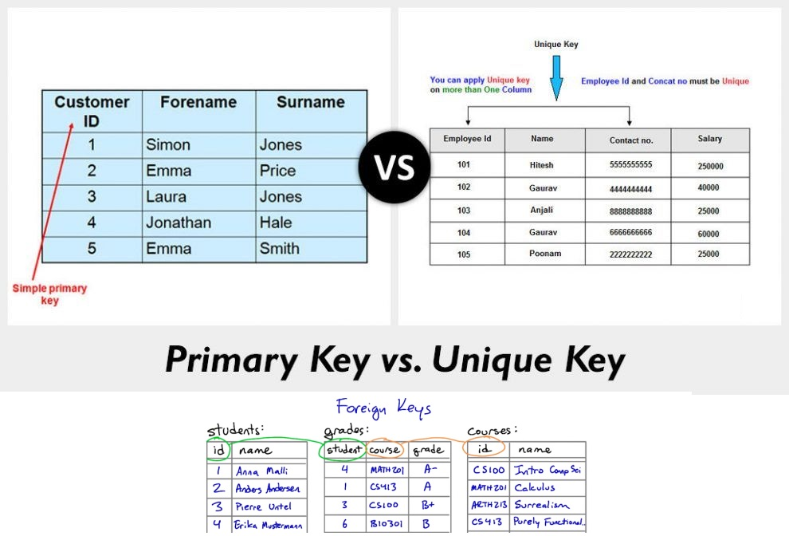
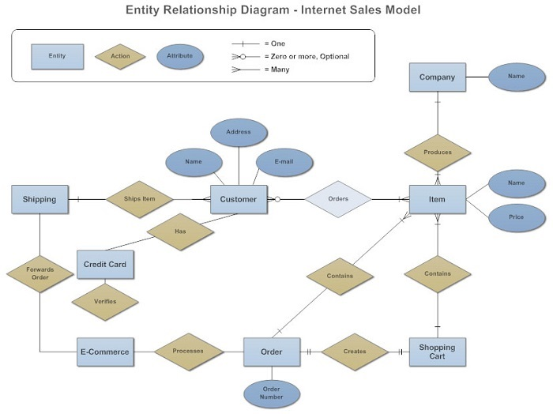
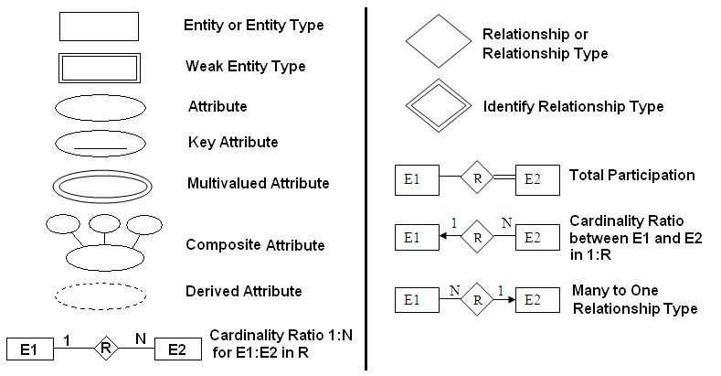

Databases (Week 1)
Panagiotis Karles

What is a Database?
A database is the essence of a dynamic website or a web application, without it there are no data to proces or analyze or even show to the user.
Who uses databases?
- Back-end developers
- Sysadmins
- Pentesters
- Data scientists
Databases vs DBMS
Database: the "space" where we store our data DBMS: the software which we manage our databases
The Fridge example:

About SQL
- Known as "SEQUEL" or "SQL"
- Structured Query Language used for Relational Database Management System (RDBMS)
- Uses Edgar Codd's relational model
- Uses Keys to determine the "relations"
- It's relations are determined by schemas
What are "Keys"?
What are "Scehmas" exactly?

What are "Entity Relationship Diagrams"?
What are the characteristics Entity Relationship Diagrams
- Chen style=(min):(max) [1:N/1:1/0:N/etc]
- Entities=Tables
- Attributes=Rows
- Actions/Relationships="Connections"
ER Symbols and what do they mean
Basic SQL
- Create database:
- Create table:
- Select column from a table:
- Delete column from a table:
- Delete the whole table:
- Drop the whole database:
CREATE DATABASE 'database_name'
CREATE TABLE 'table_name' ('c_name1' 'data_type','c_name2' 'data_type')
SELECT 'column' FROM 'table'
DELETE FROM table_name WHERE some_column=some_value
DELETE FROM table_name
DROP DATABASE database_name
Some more SQL
- Join (left):
- Join (right):
- Join (inner):
SELECT column_name(s) FROM table_name LEFT JOIN table_name ON table_name1.column_name=table_name2.column_name
SELECT column_name(s) FROM table_name1 RIGHT JOIN table_name2 ON table_name1.column_name=table_name2.column_name
SELECT column_name(s) FROM table_name INNER JOIN table_name2 ON table_name1.column_name=table_name2.column_name
But what is JOIN?